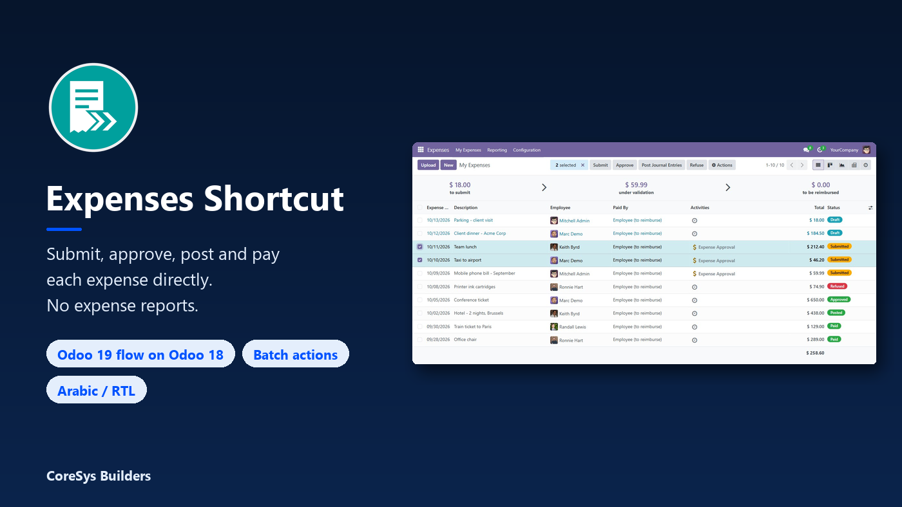
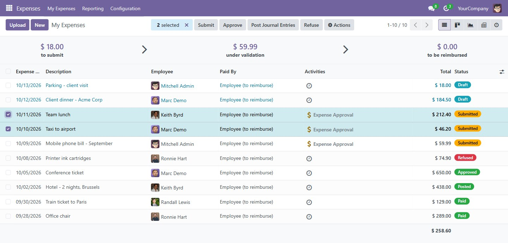
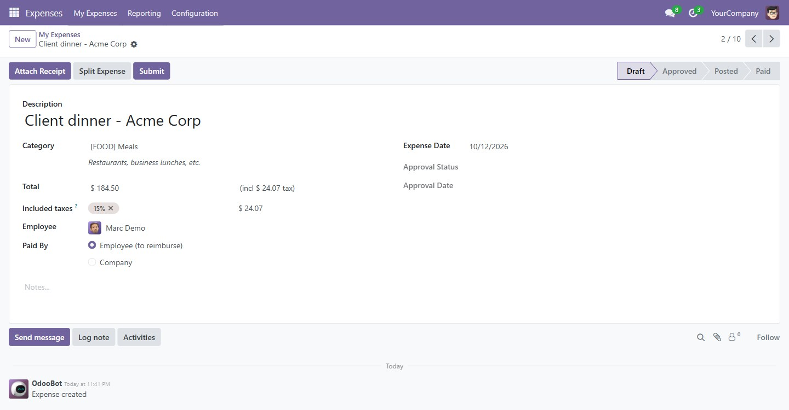
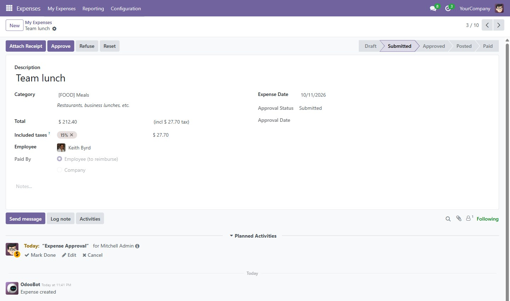
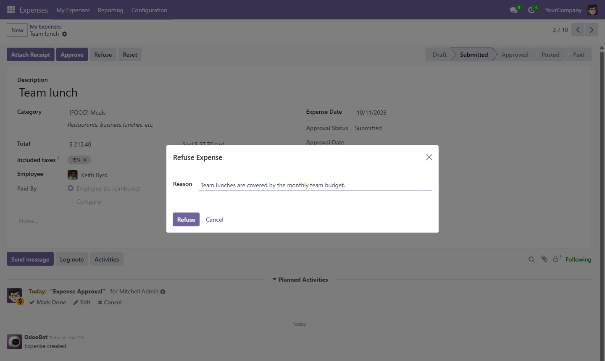
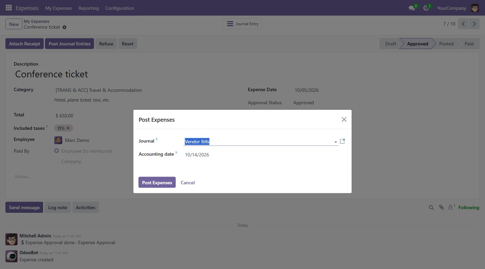
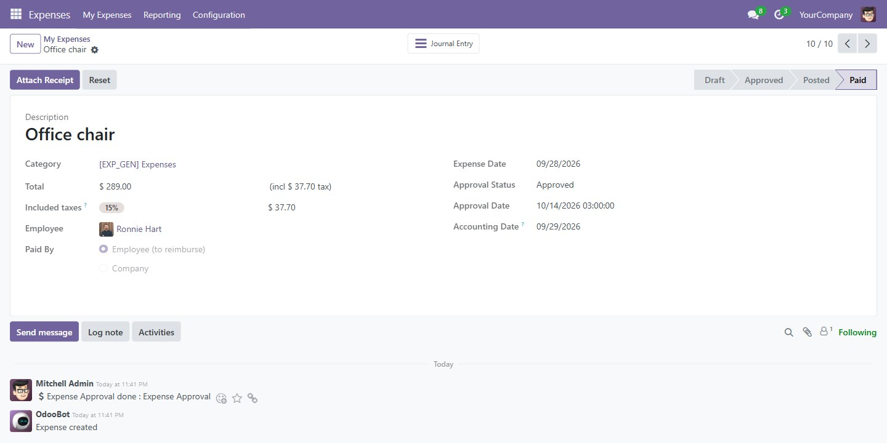
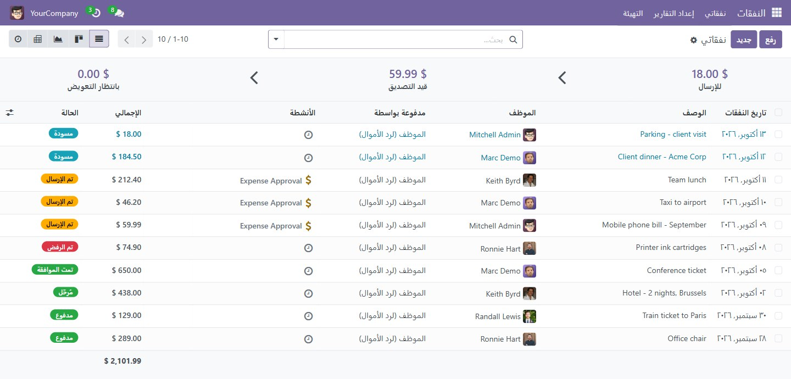

Employees submit an expense, a manager approves it, accounting posts and pays it. Every step happens on the expense itself, the way Odoo 19 works, on your Odoo 18 database.
In standard Odoo 18 every expense has to be wrapped in an expense report before anything can happen to it. For most teams that report is just an extra form to fill in and an extra screen to explain. Expenses Shortcut removes it from the user's point of view: the buttons, statuses and approvals move onto the expense, and the reports menus disappear. Odoo's own accounting is still used underneath, so journal entries, payments and reconciliation behave exactly as they do today.
One expense, one decision. Managers approve or refuse each expense on its own, so one questionable receipt no longer holds up a whole report.
Familiar Odoo 19 statuses. Draft, Submitted, Approved, Posted, In Payment, Paid and Refused, shown on the form, in the list and in filters.
Built on standard accounting. Posting and payment go through Odoo's own vendor bill and payment flows. No accounting logic is rewritten, and uninstalling the module brings back the standard expense reports.
The expense list shows each expense with its own status. Select several and submit, approve, post or refuse them in one click. If a selected expense isn't in the right state, the module names it instead of failing silently.

An employee records the expense, attaches the receipt and clicks Submit. There is no report to create and no report name to invent. The status bar shows where the expense is at a glance.

The employee's expense approver gets an Expense Approval activity on the expense itself, and can approve or refuse it from the form. Approvers can't approve their own expenses, and the activity is closed automatically whichever way the decision is taken.

Refusing asks for a reason. The employee is notified with that reason and the name of their expense, and the refusal stays in the chatter.

Accountants click Post Journal Entries and choose the journal and accounting date. Odoo 18 already creates the draft entry when the expense is approved; posting completes that same entry, so you never end up with a duplicate.

Register the payment from the expense with Odoo's standard payment dialog. The status follows the journal entry to In Payment and Paid, and a Journal Entry button takes you to the accounting side. If an expense shows as Paid while part of it is still owed, the form says so and shows the outstanding amount.

Every label, button, message and email the module adds is translatable, and a complete Arabic translation is included. The screens work right-to-left like the rest of Odoo.

hr_expense moduleBefore installing, finish or reset any expense reports that are still open. Set an expense approver (or a manager) on your employees before going live. Expenses of employees with no approver are approved automatically on submit, and in Odoo 18 approval also creates the draft vendor bill. The module logs how many employees have no approver when it is installed.
Click a question to show the answer.
They are not changed. Existing reports, their journal entries and payments stay exactly as they are, and draft expenses that are not in a report simply follow the new flow.
An expense that is already part of a report with several lines can't be approved or refused on its own, because that would also act on the other lines. Finish or reset open reports before installing; reports that are already paid need nothing.
The same person as in standard Odoo: the employee's expense approver, or otherwise their manager. Nobody can approve their own expense.
That is how Odoo 18 itself works, and the module keeps it so that accounting stays standard. Posting then completes that draft entry with the journal and date you choose. Odoo 19 creates the entry at posting instead; the result for the accountant is the same.
Posting and payment follow Odoo's standard accounting rights. Registering a payment needs the Billing (or Accountant) access level, as in standard Odoo.
Yes. Uninstall the module and the standard expense report menus and buttons come back as they were. Expenses processed while the module was installed keep their reports, journal entries and payments.
Questions and bug reports are welcome at info@coresysbuilders.com. Help with configuration or adapting the workflow to your company is available as a paid service.
CoreSys Builders. © 2026. Licensed under the GNU Lesser General Public License v3 (LGPL-3). Questions and feature requests are welcome.